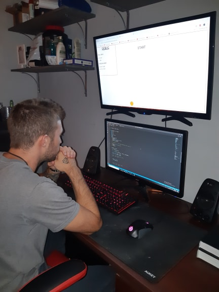

Je viens d'une petite ville de 145,690 habitants dans le nord du Quebec en Abitibi Témiscamingue qui se nomme Rouyn-Noranda .
Je suis une personne très ouvert d'esprit et très intellectuel , je pourrais dire que j'aime me casser la tête et j'adore me poser des questions sur comment les choses fonctionnes.Voilà donc la raison principale pourquoi j'aime autant la programmation . Pour certaines personnes , la programmation est un métier comme les autres.Pour moi , la programmation est tout simplement un loisir. Dès que j'ai découvert l'informatique à l'âge de 13 ans, j'ai tout de suite été attiré par ce monde. J'ai aussi un grand côté artistique , je produis de la musiques style classics, ou bien music de film , avec Fruity Loops Studio 12.0 J'adore dessiner , jouer du piano , je suis très indépendant et j'aime être dans ma bulle (dans mon petit monde) Mais bon , de retour dans le vif du sujet :)

Mon parcours maintenant!
Du moment où j'ai possédé un ordinateur, j'ai tout de suite commencé à étudier la programmation, à ouvrir tous les fichiers sources de tout ce que je pouvais, je m'amusais avec l'outil d'inspection sur le navigateur et je pouvais passer des heures à essayer de tout comprendre et je voyais pas le temps passer ! Malheureusement, j'ai beaucoup de difficulté à me concentrer sur quelque chose que je n'aime pas...l'école! Je suis une personne très brillante, mais rester assis dans une classe à faire des trucs que je ne voyais pas l'utilité, ne m'intéressait pas. Mon rêve était d'aller au cegep en technique informatique, ensuite à l'Universiter en programmation jeux vidéo, mais malehureusement, mon niveau scolaire ne me le permettait pas.
Ayant pas la même mentalité et maturité qu'aujourd'hui, j'ai malheureusement abandonné ces rêves, car ils étaient impossible pour moi. J'avais les talents et l'expérience, mais pour moi, aller à l'école pour faire de la philo, science et autre cours que je n'aime pas afin d'atteindre mon objectif , me semblait imaginable à mes yeux. J'avais l'impression de perdre mon temps... C'est à ce moment que j'ai decidé de changer de branche. J'ai donc laisser la programmation de côter et j'ai décidé de suivre un DEP en extraction de minerai. J'ai travaillé 1 an dans ce domaine à un salaire de 80,000$ et + par année dès le début . J'etais heureux financièrement, mais je n'aimais pas ce que je faisais. Après longue réflexion et après la découverte de votre programme, j'ai decidé de tout lâcher et de tout miser ! Je crois qu'il faut prendre des risques et miser gros sur ce que l'on aime . J'ai donc decider de retourner habiter chez mes parents. Je travaille maintenant dans une épicerie à salaire minimum, 20h /semaine, pour me consacrer à la programmation . J'ai gagné beaucoup de maturité et j'ai decider de tout donner dans le domaine que j'aime et d'en faire un jour, un emploi professionnel !